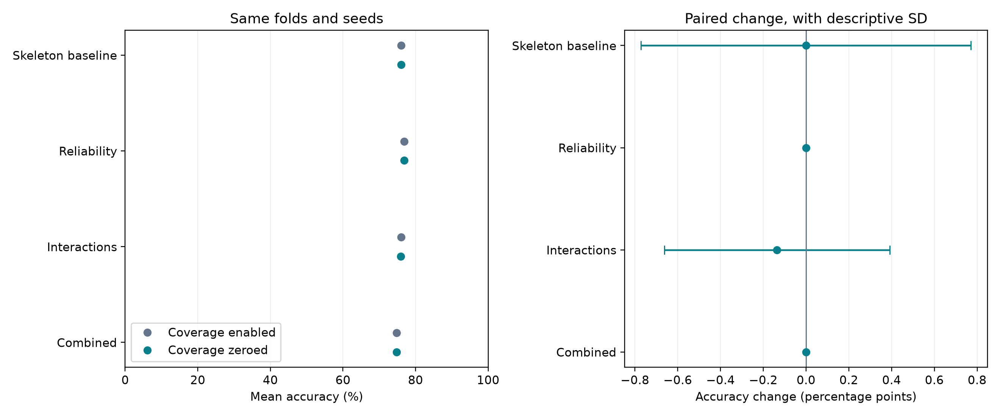

2026-11-14
Explicit coverage ablation
Explicit pose-coverage input replaced with zero; head dimensions and RNG draws retained.
The same 245 clips, 204 groups, folds and seeds are used in both experiments. Training and validation selections are recomputed. Accuracy changes use percentage points, with coverage-off minus coverage-on.
| Model | Coverage on | Coverage off | Accuracy change (pp) | Macro-F1 change | AUC change | Improved/tied/worse runs |
|---|---|---|---|---|---|---|
| Skeleton baseline | 76.1% | 76.1% | +0.00 | +0.000 | -0.001 | 1/13/1 |
| Reliability | 76.9% | 76.9% | +0.00 | -0.000 | +0.001 | 0/15/0 |
| Interactions | 76.1% | 75.9% | -0.14 | -0.001 | +0.002 | 0/14/1 |
| Combined | 74.8% | 74.8% | +0.00 | +0.000 | -0.001 | 0/15/0 |

This is an exploratory paired comparison on previously inspected footage. Fold/seed observations are dependent; descriptive deviations and win counts are not confidence intervals or significance tests. Zeroing the explicit scalar leaves observation masks, missing joints, confidence channels and interaction counts available. It cannot establish that a model uses only body motion or eliminate all detection cues.
All 140 saved fits were verified. The unchanged controls reproduce identical test scores and decisions. TCN score reproduction used cuda. Reference artifacts were read without modification.
Research notes | Detailed comparison | Paired runs | Coverage-off experiment | Coverage-on reference